Na PREDAJ Rodinný dom na krásnom pozemku - obec Rumanová
Rumanová
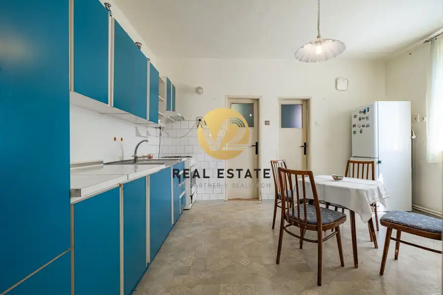
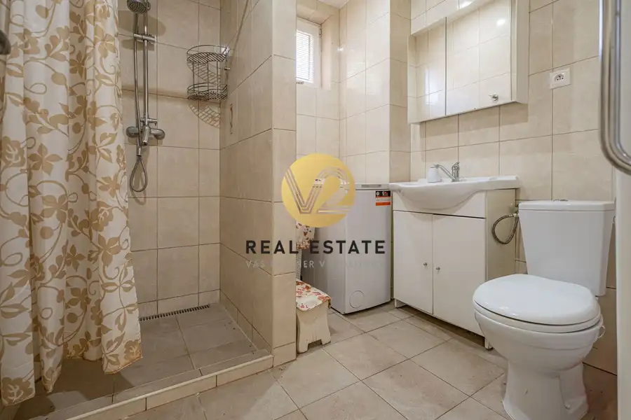
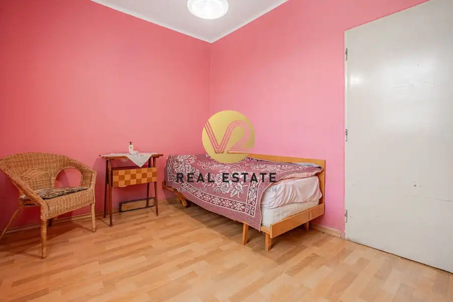
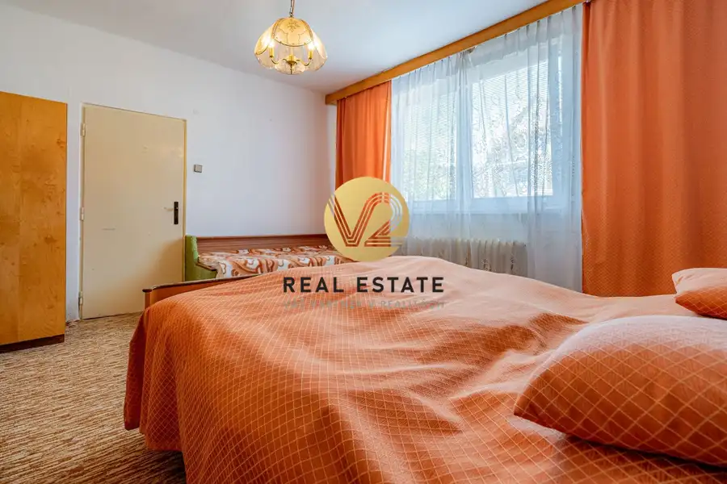
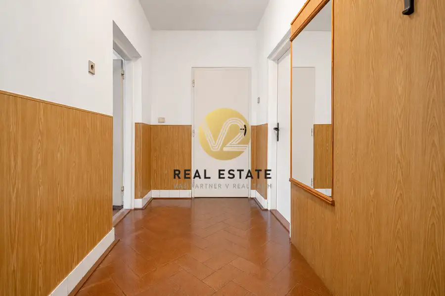
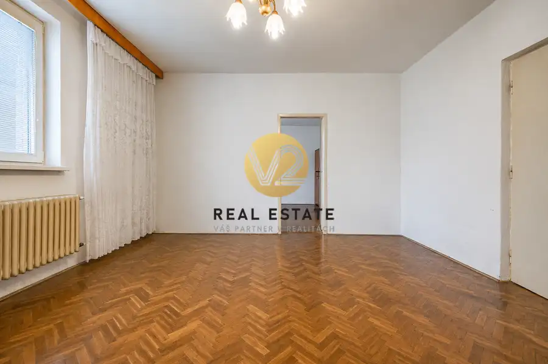
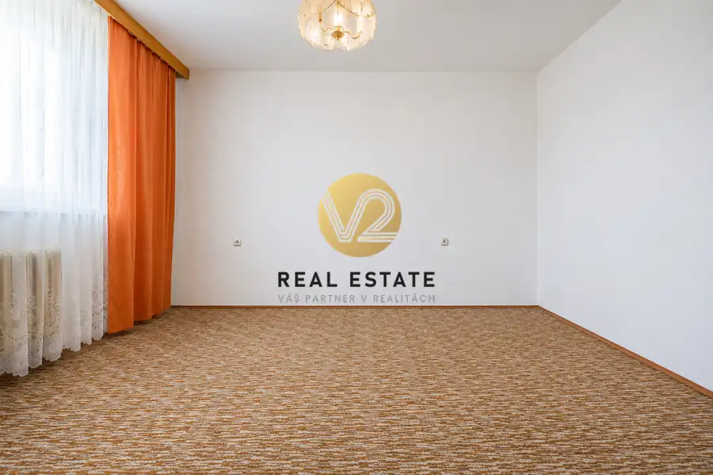
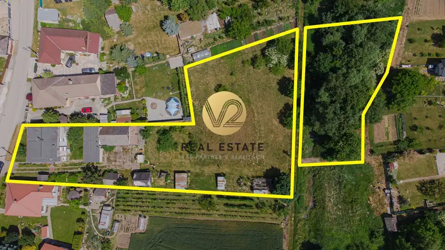
- Plocha240 m²
- StavPôvodný stav
O nehnuteľnosti
Zuzana Bojdová +421 904 300 202 zuzana.bojdova@v2realestate.sk V2 Real Estate ponúka na predaj: Dvojpodlažný rodinný dom v obci Rumanová, situovaný na krásnom a udržiavanom pozemku s výmerou približne 3 000 m².Nehnuteľnosť je momentálne dispozične upravená na 3 samostatné bytové jednotky, čo prináša široké možnosti využitia. Je ideálnou voľbou pre viacgeneračné bývanie, keďže jednotlivé domácnosti môžu mať vlastný priestor a zároveň zostať v bezprostrednej blízkosti. Zároveň predstavuje zaujímavú investičnú príležitosť – jednu alebo viac bytových jednotiek je možné využiť na dlhodobý či krátkodobý prenájom a vytvoriť si tak pravidelný príjem. Nehnuteľnosť tak ponúka kombináciu vlastného bývania a investície s potenciálom ďalšieho zhodnotenia.Bonusom je samostatný menší domček nachádzajúci sa na pozemku, ktorý môže poslúžiť napríklad ako hosťovský domček, sklad, pracovný priestor či ďalšie zázemie podľa potrieb nového majiteľa.Technické informácie:• momentálne 3 bytové jednotky• každá bytová jednotka má približne 120 m²• samostatné vstupy• stavba z kvádra (1962)• plastové okná• čiastočne zrealizovaná fasáda• strecha menená približne pred 10 rokmi• čiastočné podpivničenieInžinierske siete: voda, elektrina, plyn, žumpa.Veľkou pridanou hodnotou tejto ponuky je rozľahlý pozemok s výmerou približne 3 000 m², ktorý poskytuje dostatok priestoru na oddych, záhradkárčenie, chov zvierat alebo realizáciu vlastných predstáv.Rumanová patrí medzi vyhľadávané obce vďaka pokojnej atmosfére, výbornej dostupnosti a rýchlemu napojeniu na diaľnicu R1. Do Nitry, Trnavy či Hlohovca sa dostanete za krátky čas, čo oceníte pri každodennom dochádzaní.Obyvatelia oceňujú kvalitnú vodu z miestnej artézskej studne, vhodnú aj pre najmenšie deti. Voľný čas môžete tráviť v historickom parku pri kaštieli alebo návštevou obľúbenej vyhliadkovej veže, ktorá ponúka krásne výhľady na okolitú krajinu.Pre viac informácií kontaktujte:Zuzana Bojdová +421 904 300 202zuzana.bojdova@v2realestate.sk
Parametre
- Druh
- Rodinný dom
- Dátum zverejnenia
- 08. 06. 2026
- Energetický certifikát budovy
- nie je
- Plocha pozemku
- 3036 m²
- Počet nadzemných podlaží
- 2
- Rok výstavby
- 1962
- Stav nehnuteľnosti
- Pôvodný stav
- Terén pozemku
- Prevažne rovinatý
- Typ
- Predaj
- Typ konštrukcie
- Pórobetón (Ytong)
- Zastavaná plocha
- 120 m²
- Úžitková plocha
- 240 m²
Kde to je


Mohlo by Vás zaujímať
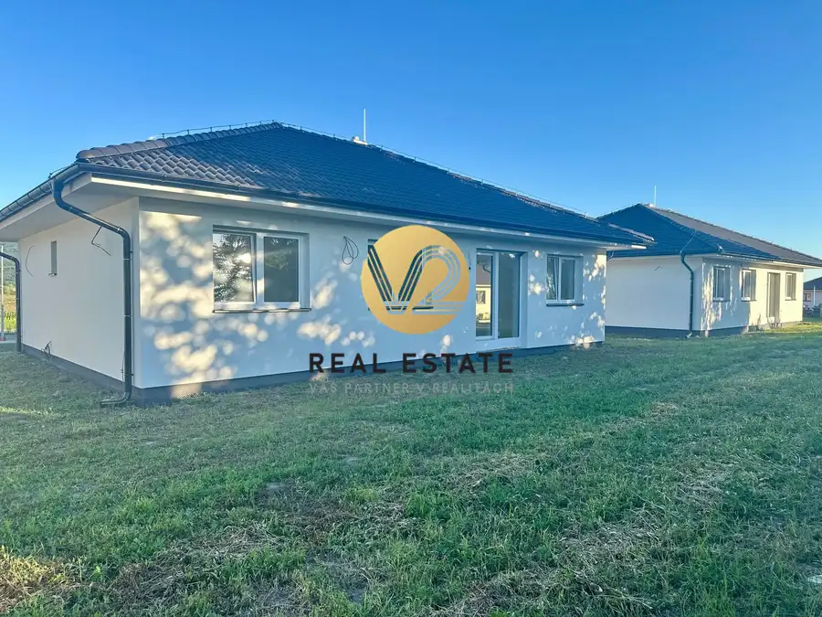
DomNové 189 000 €Na predaj skolaudovaná 4-izbová novostavba Merašice 105 m²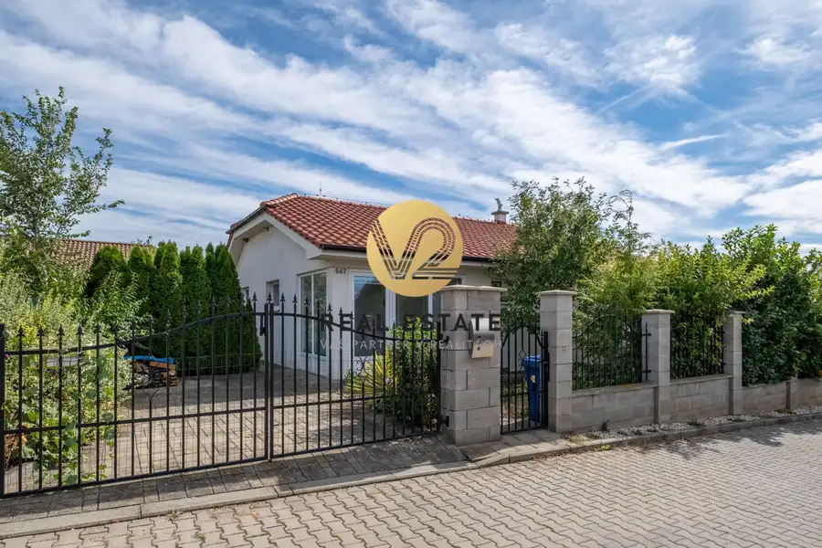
DomNové 275 000 €Na PREDAJ Priestranný 4-izbový rodinný dom s garážou a krásnym pozemkom Golianovo 120 m²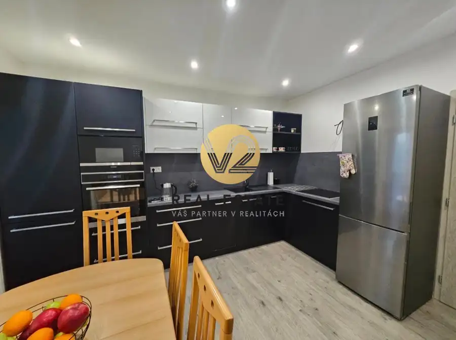
BytNové Cena na vyžádáníNa PREDAJ priestranný 3-izbový byt Nitra - Chrenová Nitra 3-izbový83.2 m²1. podlažie